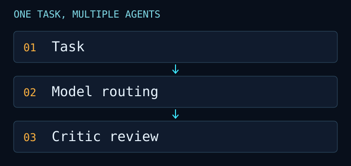

LAB-01
Prototype
Mixen
One task, several AI tools. A desktop agent routes each step to a suitable model and checks the result with a separate critic.

- Problem
- Too many AI apps, each with its own quota.
- How it works
- Uses official CLI tools for Claude, Codex, Gemini and local models. Quotas are labelled exact, derived or unknown; unknown values stay unknown.
- Status
- Prototype. The repo is private.